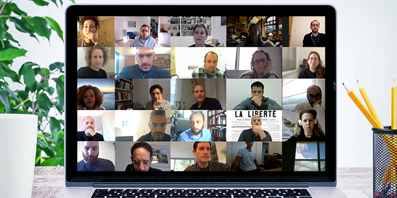
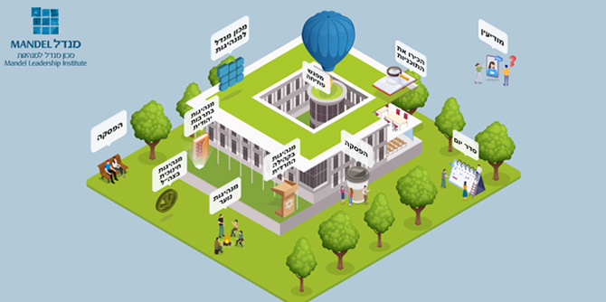

In January, the Mandel Leadership Institute held its first joint study day of the 2020-2021 academic year for the fellows of all its programs. Conducted online during Israel’s third COVID-19 lockdown, the event was designed in a manner that practically applied the key values of the Institute and served as an encounter between talented people and big ideas.
Joint study days offer an important opportunity for fellows of all the Institute’s programs to get to know each other and exchange ideas. They also aim to expose the fellows to the full range of content and spheres of influence in which the Institute is active. “We look at the COVID-19 crisis in a sober and humble manner, and choose to make the most of the learning opportunities that it presents,” said Yael Hess, director of the Mandel Leadership Institute, in her address to the participants. “We reinvent ourselves and constantly re-examine our value system. Being a leader requires dealing with difficulties that must be addressed, finding the right tools for dealing with them, and creating meaningful learning encounters that promote personal interaction, while not shying away from the difficulties,” she added.
The fellows of the Mandel Leadership Institute's diverse leadership programs hail from different communities and sectors in Israeli society. They include leaders from the Haredi (ultra-Orthodox) community, leaders in non-formal education for youth, leaders in Jewish culture, and officers of the Israel Defense Forces. Joint study days provide a space in which all these fellows can come together to engage in constructive dialogue, and listen and respond, thereby broadening and improving the quality of discourse, strengthening and enhancing their leadership skills, and improving their ability to translate their ideas into action plans.
The social distancing requirements of the COVID-19 period demanded flexible and creative thinking on the part of the Institute, which redesigned the format of this event in response to the situation. A special online environment was developed to overcome the challenges of distance learning and the inability to meet face-to-face. The aim was to create a comfortable and aesthetic learning environment that would be easy for the fellows to navigate and that would facilitate their maximum involvement, while taking into account differences in their digital literacy and varied physical conditions during participation in the event. There was also a focus on the non-formal, interpersonal aspect, which was an important part of the event.

The online environment
Throughout the day, online learning sessions were held with senior faculty members of the various leadership programs, which enabled fellows to learn about issues and content of interest to them. One of the study units in the Mandel Programs for Leadership Development in the Haredi Community explored the tension when Israelis who live a religious, Torah-based lifestyle interact with general Israeli society, to which they also belong and in which they operate. “The fellows of our program represent vibrant and creative growth in the Haredi community,” said Dr. Naomi Perl, the director of the program. “They are committed to precise, values-driven action, and operate as mediators between all these worlds.” The program’s fellows delve into the tensions between change and conservation, between the individual, the community, and the state, between self-actualization and fulfilling expected roles, and between tradition and modernity, as well as questions about the roles of community leaders (and of the fellows themselves) in the Haredi community in the current age.
A conversation between
Dr. Ruth Calderon and halakhic scholar
Malka Puterkovsky, both faculty members of the
Mandel Program for Leadership in Jewish Culture, focused on the works and ideas of the Hebrew poet Haim Nahman Bialik, in an attempt to define the significance of his work in today’s Israeli culture. In addition to being Israel’s national poet, Bialik was a philosopher, entrepreneur, and groundbreaking cultural leader. “We relate to contemporary realities through the lens of Bialik's words,” said Dr. Ruth Calderon. “While he was raised in the Hasidic world, as a creative artist he was careful to read and study the world around him. That wealth of knowledge helps create a culture that is rich, deep, and connected to its roots.” In closing, Malka Puterkovsky noted that “Bialik understood the poetry of traditional Jewish sources, which contain all kinds of voices that can be combined into a single canonical voice while maintaining the differences between them.”
Dr. Ruth Calderon and Malka Puterkovsky in conversation
The study day raised curiosity and interest, both on a personal and cultural level and on an intellectual level. Despite the fact that it was held online, the participants felt they had a real opportunity to meet and talk with one another, and enjoyed a meaningful interpersonal and cross-sectoral encounter that included social and emotional experiences alongside learning and study. “I think that there is great importance in holding joint sessions with other Mandel leadership programs. It is enriching in terms of both content and human capital,” wrote one of the fellows, while another added: “The interface between the fellows of the different programs is so fruitful… In this manner, we will be able to help each other deal with different and similar leadership challenges.”
{kind=link}
{kind=link}
{kind=link}